As we have already stated, we can exploit the image intensity distribution in the neighbourhood of a candidate landmark in order to achieve recognition of a previously observed prototype. To this end, we represent the appearance of landmarks (both candidates and prototypes) using a technique known as principal components analysis (PCA) [60, 44, 48]. Image recognition using PCA operates by projecting the image to be classified into a subspace which ``best'' distinguishes the classes (or prototypes) to be identified. The optimality of this representation is based on an assumption that the reconstruction of the image is a linear combination of a set of descriptive vectors. While variants of the method employ a wide variety of classification schemes, we choose the class having the smallest Euclidean distance in the subspace to the target as a match.
PCA operates by first constructing a linear subspace from a set of
exemplars. In the domain of face or object recognition, the exemplars
might be a set of canonical views of the faces or objects to be
distinguished. Each exemplar is expressed as a vector, 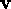,
and the set of these vectors is assembled into a matrix,  .
The eigenvectors of
.
The eigenvectors of  are computed using singular
values decomposition, producing an orthonormal basis set
are computed using singular
values decomposition, producing an orthonormal basis set . Since
each vector in this basis set is of the same dimensionality as the
input prototypes and, as such, can be represented as images, they are
sometimes referred to in the literature as eigenpictures or
eigenfaces [60].
. Since
each vector in this basis set is of the same dimensionality as the
input prototypes and, as such, can be represented as images, they are
sometimes referred to in the literature as eigenpictures or
eigenfaces [60].
More formally, and expressed in the context of landmark recognition,
consider a set T of m landmark prototypes 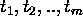.
Each of these prototypes is an instance of a landmark candidate - that
is, each prototype has been detected using the attention operator
outlined in Chapter 3, and therefore each prototype has
an associated local intensity map; typically, we select the local
intensity map to be of the same scale as the attention operator that
was used to detect the landmark. For each prototype , we build a
column vector, by scanning the local intensity
distribution in row-wise order and normalising the magnitude of
to one. Note that if the local intensity image
consists of s by t pixels, then it follows that is
of dimensionality n=st. Our goal is to construct a discriminator
using the set of vectors defined by T. This is accomplished by
constructing an 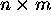 matrix  whose columns consist
of the vectors , and expressing
whose columns consist
of the vectors , and expressing  in terms of
its singular values decomposition,
in terms of
its singular values decomposition,
where is an column-orthogonal matrix whose
columns represent the principal directions of the range defined by
 (that is, gives the eigenvectors of
(that is, gives the eigenvectors of
 ), 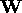 is an 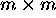 diagonal matrix, whose
elements correspond to the singular values (or eigenvalues) of
), 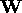 is an 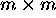 diagonal matrix, whose
elements correspond to the singular values (or eigenvalues) of
 and 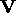 is an column-orthogonal
matrix whose rows represent the projections of the columns of
and 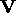 is an column-orthogonal
matrix whose rows represent the projections of the columns of
 into the subspace defined by (weighted
appropriately by the inverses of the eigenvalues). Note that the
columns of define a linear subspace of dimensionality
m, which can be
into the subspace defined by (weighted
appropriately by the inverses of the eigenvalues). Note that the
columns of define a linear subspace of dimensionality
m, which can be much
smaller than n. In addition, the principal axes of the subspace are
arranged so as to maximise the Euclidean distance between the
projections of the prototypes into the subspace, which optimises
the discriminability of the prototypes. As we have already mentioned,
the columns of are of dimensionality n, and hence can
be represented as images. Figure 4.2 shows a set of
landmark prototypes on the left, and the corresponding eigenvectors,
or eigenlandmarks constructed from the prototypes on the right.
much
smaller than n. In addition, the principal axes of the subspace are
arranged so as to maximise the Euclidean distance between the
projections of the prototypes into the subspace, which optimises
the discriminability of the prototypes. As we have already mentioned,
the columns of are of dimensionality n, and hence can
be represented as images. Figure 4.2 shows a set of
landmark prototypes on the left, and the corresponding eigenvectors,
or eigenlandmarks constructed from the prototypes on the right.
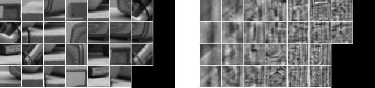
Figure 4.2: (a) Landmark Prototypes and (b) Eigenlandmarks.
Once the subspace is constructed, it can be used for classifying
landmark candidates. Given a landmark candidate c, we construct a
vector  from the local intensity distribution of c,
normalised to unit magnitude
from the local intensity distribution of c,
normalised to unit magnitude . The subspace projection of
. The subspace projection of
 is obtained using
is obtained using
and then c can be matched to the prototype 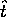 whose
subspace projection is closest (in the
Euclidean sense) to in the subspace. If the subspace
projection of prototype
is defined using the Euclidean metric,
where is obtained from the prototype image in the same
fashion as was used to obtain  , then the optimal match
is defined as
, then the optimal match
is defined as
The following section will demonstrate how this classification mechanism can be used to track landmarks over a set of viewpoints.